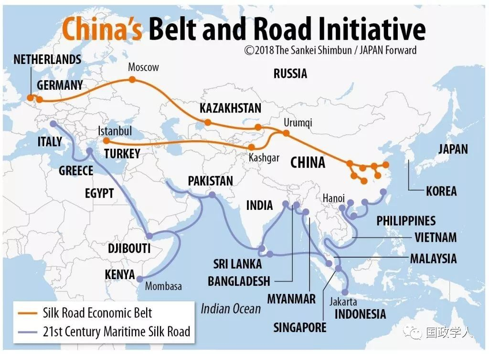

收录于合集

简 介
【作者】 **** 张利华 ，清华大学国际关系研究院教授，中欧关系研究中心主任。研究方向为当代中国政治与外交、中国与欧盟关系。主要著作有《中国法治民主建设之路》《市场经济与民主政治》《南斯拉夫自治社会主义理论研究》《中国与欧盟关系研究》（主编）等。 胡芳欣 ，清华大学中欧关系研究中心主任助理。
【来源】 《人民论坛·学术前沿》2019年第3期
内容提要
中国自提出“一带一路”倡议以来取得了丰硕成果。日本作为中国“周边外交”与“大国外交”的交汇点，是中国推进“一带一路”倡议过程中的重要影响因素。日本对待“一带一路”倡议的态度经历了从抵制、观望到积极参与的重大转变，这主要是由日本对本国经济利益与外交成果需求急剧上升、中国“一带一路”倡议的落实能力及成果的吸引、特朗普上任后美国实行贸易保护主义政策以及美国本身对“一带一路”倡议态度转变等因素共同决定的。对此，中方应加强与日方沟通、增信释疑，避免互伤、灵活合作，重视日本经济界的作用，以多边促双边、共同助力化解地区热点问题，从而积极推进并深化中日在“一带一路”倡议领域的合作。
【关键词】 “一带一路”倡议；地缘政治；第三方市场合作

正文
2013年，习近平主席提出了“一带一路”倡议，至今已有5年多，该倡议得到了全球100多个国家和国际组织的积极支持和参与，“一带一路”的建设内容也被纳入联合国大会和安理会等重要决议中。该倡议从愿景走向现实，成果丰硕。继续深入推进该倡议，来自域外大国的支持和参与愈加重要。2017年5月中国政府发布的《共建“一带一路”：理念、实践与中国的贡献》强调，与发达国家的第三方合作是共建“一带一路”的重要内容。
日本作为中国的邻邦以及美国的盟友，是中国推进“一带一路”倡议过程中的重要影响因素。日本对“一带一路”倡议的认知较为复杂，经历了一个由抵制、观望到积极参与的转变过程。关于日本对中国“一带一路”倡议的认知与态度，虽有部分研究成果已经进行了梳理，但尚未进一步揭示日本相关认知背后的缘由；有些讨论比较笼统，没有体现出日本关注点已经发生的变化；此外，有一些文献研究了日本态度的转变及其原因，但并未提出中国可采取的应对之策，也没有涉及当前中日之间有关第三方市场合作的最新动向。
本文将系统梳理日本政府对“一带一路”倡议的态度转变过程，分析其态度转变前后的原因，在此基础上探讨中日深化“一带一路”建设合作的建议，以为中方了解日本政府对“一带一路”倡议的最新意向和态度提供信息，为加强中日在“一带一路”倡议领域的合作提供参考。
**1
**
日本对“一带一路”倡议的态度转变
最初的认知及缘由。2012年，由于安倍内阁对历史问题的看法以及中日领土岛屿争端等，中日关系降至两国恢复邦交正常化以来的最低点。2013年中国政府提出“一带一路”倡议后，日本对中国的“一带一路”倡议持谨慎观望态度，并实行了一些对冲政策。
2 0 1 2 年年底安倍第二次上台后，提出 “ 俯瞰地球仪”外交，并在2013～2015年访问了土耳其、蒙古国以及中亚五国，推行日本版的“丝绸之路”外交。2015年4月，安倍晋三与习近平主席在印尼会晤时表示，将继续“关注”“一带一路”具体实施的情况，显示了日本的暧昧态度。5月，安倍内阁宣布未来5年将向亚洲国家投资1100亿美元，以满足亚洲地区基础设施建设的巨大资金需求，这比之前5年日本在此类基础设施的投资规模增加了30%的金额，被舆论视为向亚投行的“叫板”之举。[1]6月，《亚投行协定》正式签署时，日本没有参加，放弃了创始成员国的身份。与此同时，日本与美国加快推进“跨太平洋伙伴关系协定”（TPP）的谈判进程，与菲律宾、越南、澳大利亚、印度等国加强合作，以应对和牵制中国的“一带一路”倡议。
总体来看，在中国提出 “ 一带一路 ” 倡议的最初两年，日本持观望甚至抵制的态度。其主要原因有以下几点。第一，日本将中国视为地缘政治竞争对手。二战以后，日本长期把中国视为东亚及东北亚地区地缘政治竞争的对手，对于中国对该地区国际秩序的影响十分关注。2010年，中国经济总量超越日本且优势不断扩大，使日本政府产生了严重的战略焦虑和危机感。在当前东亚及东北亚地区权力转移进程中，安倍政府在国际社会以“战略性外交”和“价值观外交”渲染“中国威胁论”，某些日本媒体甚至刻意抹黑中国，指责中国在搞所谓 “ 经济殖民 ” ，并质疑中国出口技术的质量等，这些都暴露出中日之间深层次的结构性矛盾。
日本是二战后美日联盟、美韩联盟的东亚地区秩序的既得利益者。日本在“一带一路”所涉地区深耕多年，投入极大，并在某些地区占据了主导地位，自然不愿意失去这些成果。1997年日本提出“欧亚大陆外交战略”，2004年提出建立“中亚+日本”对话机制，2006年提出加强日本与中亚国家经济合作的“自由与繁荣之弧”等倡议。[2]日本基础设施出口的重点地区有不少与中国“一带一路”倡议所涉地区重叠，所以，在日方看来，中日两国在“一带一路”所涉地区的经济竞争难以避免。例如，在印尼、泰国等国家的高铁招标中，中日两国企业“互伤”严重。因此，对于中国“一带一路”倡议的出台，日本起初持质疑和抵制态度。
第二，日本跟随美国“亚太再平衡”战略，维持自己的“印太战略”。奥巴马执政时期美国提出并推进“亚太再平衡”战略，还积极打造了印太（Indo- Pacific）概念[3]，力图将亚太的边界继续西移至印度次大陆。2011年7月，希拉里提出“新丝绸之路”计划，意在统合美国的中亚与南亚政策。2015年3月，美国军方发布的《2 1世纪海上力量合作战略》强调 “ 亚印太 ” 地区对美国的重要性，并提出了“全域介入”战略。[4]特朗普上台后，虽然不再提 “ 亚太再平衡 ” 战略，在形式上有别于奥巴马政府，但是，美国当局遏制中国的这一战略的意图与实质并未改变。2 0 1 7年1 2月，美国政府发布的《国家战略报告》将中国定位为 “ 战略竞争对手 ” 。基于“霸权护持”思想，美国自然不希望中国的“一带一路”倡议影响其主导地位与利益。
作为美国在亚太地区的坚定盟友，日本充分认可并大力支持美国的“亚太再平衡”战略，并于2016年提出了亚印太构想——“自由开放的印太战略”。事实上，早在2007年，安倍在第一次执政时就曾在印度议会演讲中提出印度洋与太平洋的“两洋交融”（「二つの海の交わり」、“Confluence of the Two Seas”）。安倍的印太
战略的目的在于，在政治层面维护印太地区所谓民主、自由和法治等国际秩序和规则，并保障安全、争取经济利益。[5]该战略的地缘部分恰好与“21世纪海上丝绸之路”有重叠，日本志在以此战略打造对抗中国 “ 一带一路 ” 倡议的战略框架，对冲快速崛起的中国，维护“自由主义世界秩序”，巩固并扩大其自身的影响力。特朗普上台后，日本积极向美国游说此概念，美国也顺势接棒，加大与日本、印度等国在这一地区的合作。此外，日本还积极推动日美印澳四国的战略合作。2017年年底美国总统特朗普访问日本时，日美宣布将共同推动“印太战略”。[6]
总之，日本起初对中国的“一带一路”倡议持质疑抵制态度的背后的主要原因是其地缘政治战略，跟随美国，维持本国的“印太战略”等。
日本政府的态度转变及其原因。日本对中国“一带一路”倡议的态度在2017年开始出现转变。2017年5月，安倍派自民党干事长二阶俊博携其亲笔信率团出席北京“一带一路”国际合作高峰论坛。6月，安倍在公开演讲中称，“一带一路”倡议“具有连接不同地域的潜力”，表示愿意同中方围绕“一带一路”展开合作。[7]7月，习近平主席在出席二十国集团领导人峰会期间应约会见日本首相安倍晋三，两国首次就该倡议的合作达成共识，安倍表示，日方期待与中方积极探讨在“一带一路”框架下的合作。[8]双方在11月亚太经合组织领导人非正式会议期间再次对“一带一路”框架下的合作进行了确认。同月，日本经济界代表团访问中国，在“一带一路”框架下的合作是重要议题之一。12月，安倍在第三届日中CEO峰会上进一步表示，日本的“印太战略”与中国的 “ 一带一路 ” 倡议有合作的可能性。[9]2018年4月，第四次中日经济高层对话就推动“一带一路”合作、中日第三方合作达成共识。
5月，李克强总理赴日本出席中日韩领导人会议并访日，中日签署了《关于开展第三方市场合作的谅解备忘录》，其中申明中日企业将在“一带一路”框架下展开合作。6月，日本政府修订了《基础设施系统出口战略》，中日第三方市场合作被纳入日本的国家发展战略中。9月25日，首次中日第三方市场合作工作机制会议在北京召开，标志着双方的备忘录开始落实，第三方市场合作正式起步。[10]
为什么日本对“一带一路”倡议从观望、抵制再到积极参与？归纳起来，主要有以下几方面的原因。第一，日本方面的自动力。日本对本国经济利益与外交成果需求的急剧上升，是其转变态度的根本原因。国内形势和世界形势的变化使日本政府不得不重新审视中日两国经贸及整体关系。就日本国内形势而言，2012年年底安倍第二次上台执政后，相继通过了新安保法相关法案，解禁了集体自卫权，加之“森友学园”与“加计学园”事件的影响以及自卫队南苏丹维和“瞒报门”事件的发酵，引发了不少国民的担忧。2017年7月，自民党在东京都议会选举中遭遇历史性惨败，《每日新闻》当月的舆论调查显示，内阁支持率降至安倍二度执政以来的最低点。[11]因此，安抚国民情绪、维持内阁支持率成为当务之急，除了经济作为外，外交成果分量更重。日本《2017年外交白皮书》指出，“支持经济发展”“与周边国家加强关系”“强化日美同盟”是日本外交的三大支柱[12]，参与“一带一路”等区域合作恰好是同时实现前两大支柱的举措。
就世界形势来说，英国脱欧、美国退出TPP并大打贸易保护主义牌、世界贸易组织谈判陷入停滞、国际金融机制改革进展迟缓等，都沉重打击了全球与区域经济合作的发展，也损害了高度依赖对外贸易的日本的经济利益。 “ 安倍经济学”实施5年多来，日本经济虽有复苏，但却始终维持着低速爬坡状态。2018年日本央行调查显示，日本企业景气状况指数自2012年第四季度以来首次连续两季度下滑，结构改革也无太大进展。2018年6月，日本舆论调查会最新的民调结果显示，对“安倍经济学”持续表示“不期待”或“不太期待”的受访者比例达56%[13]，日本普通民众对“安倍经济学”的失望情绪已十分明显。
2013年以来，“一带一路”倡议所聚集的新兴国家与发展中国家的市场需求日益突显。亚投行的资料显示，根据测算，2015～2030年，亚洲地区新的基础设施建设需求将达38万亿美元，平均每年有1.4万亿美元的资金缺口。[14]
在国内外形势的压力下，安倍逐渐意识到，与世界第二大经济强国中国的关系持续紧张不利于日本经济活力的维持与安全保障的维护，日本需要与中国在“一带一路”地区加强合作。日本企业若能有效地利用“一带一路”建设带来的机会，将加速其拓展海外市场，日本经济也将形成新的增长点，并给“安倍经济学”注入新活力。反之，日本如果抵制“一带一路”倡议，则很有可能在地区未来的发展潮流中被边缘化。此外，安倍政府认识到，加入“一带一路”倡议并身处其中要比置身事外更能发挥日本对于项目标准和规则制定的影响。
基于此，日本迈出与中国改善关系的步伐。[15]2018年4月，中断8年之久的中日经济高层对话重新启动，标志着两国关系开始回暖，日本外相河野太郎表示，“日中经济合作是两国关系的重要基础和推动力”[16]。2018年5月，李克强总理赴日出席第七次中日韩领导人会议并访问日本，这是中国总理时隔8年的正式访日，也是时隔两年半后三国领导人再聚首。此外，在朝核问题上日本也需要中国的合作，而“一带一路”的合作又可以反过来促进中日关系的转圜与提升。
第二，中国方面的吸引力。中国 “ 一带一路”倡议的落实能力及其成果，使日本政府改善与华关系的愿望愈加强烈。自“一带一路”倡议提出以来，中国在技术、资金、人才等各方面都投入了大量资源，沿线国家也越来越多地加入到合作中，基础设施建设进展迅速，倡议开始收获实质成果，成为颇受欢迎的公共产品。中国已与40多个“一带一路”沿线国家实现空中直航，中欧班列运行路线超过50条，港口、海运合作也日益密切。2017年，中国与“一带一路”沿线国家的贸易额同比增长了17.8%。[17]截至2017年年底，“丝路基金”已签约17个项目，承诺投资额达70亿美元。截至2018年6月，亚投行成员国总数已增至87个，其基础规模与扩容速度令人瞩目。对此，日本共同社、《日本经济新闻》等媒体都予以了肯定性的报道，认为亚投行影响力在不断扩大，作为国际金融机构的地位逐渐巩固。 [ 1 8 ] 与此同时，亚投行与亚开行之间的关系也逐渐明晰，亚投行主要着眼于基础设施建设，亚开行则主要关注开发援助与扶贫等，双方是互补而非竞争对立的关系。此外，亚开行的投资与日本“印太战略”相关的基建项目较少，短期内影响力不大，吸引力也不太大。有日本学者指出，中日在基建投资上的对抗只会导致两国均抬高拨款金额，日本当前政府债务与GDP之比显著高于他国，难以承受。[19]
中国是钢铁、水泥、机械设备等基建资源的生产大国，具备较高的基建能力、制造业技术水平以及交通通信技术，其庞大的产能和丰厚的资本也可以让日企在投资“一带一路”沿线国家时少几分风险顾虑。此外，“一带一路”的开放性与包容性使得日本在具体行动上接受该倡议并非难事。
第三，美国方面的因素。一方面，特朗普上任后美国实行贸易保护主义政策，这是日本转变态度的促进因素。安倍曾试图借TPP进一步深化与美国的同盟关系并提升日本的影响力，作出积极推动和参与TPP的战略选择。然而，特朗普上任美国总统当天便宣布美国退出TPP，此后又推出各项贸易保护主义政策与贸易制裁措施，给经济全球化的继续发展蒙上了阴影，也给贸易立国的日本带来沉重打击。2018年3月，特朗普政府开始对美国进口的钢铁和铝分别征收25%和10%
的关税，日本也未能幸免。安倍对特朗普提出的“美国优先”“本土第一”的政策失望，不得不把突破点放在与中国携手推进东亚合作方面，也不得不自己扛起自由贸易的大旗，以应对经济增长外部环境恶化的现实压力。在美国退出TPP后，2018年3月，日本统领其他11国签署协定，开始积极推动中日韩自贸区和“区域全面经济伙伴关系”（RCEP）谈判，2018年7月，日本与欧盟签署了经济伙伴关系协定。[20]尽管中日在一些问题上有分歧，但两国都坚定地支持自由贸易，支持按世贸组织规则处理经贸问题，而“一带一路”建设正是维护多边自由贸易体系的具体行动。
另一方面，美国本身对中国“一带一路”倡议的态度也发生了变化，从排斥到暧昧再到明确表态。[21]2017年5月，美国派代表团出席了“一带一路”国际合作高峰论坛，美国驻华大使馆和美国企业成立了“美国‘一带一路’工作小组”以协调中美合作。6月，特朗普首次明确表示愿意与中国在“一带一路”相关项目上合作。日本方面十分警惕在“一带一路”合作上美国再度上演“越顶外交”从而令日本陷入被动。因此，在密切与美国交流意见的同时，日本对美国的真实意图和可能采取的行动保持高度警惕，对美国维护东亚地区秩序的意愿和能力有所怀疑，而力图参与“一带一路”建设，以维持战略缓冲空间并以防不测。
**2
**
深化中日“一带一路”建设合作的建议
当前，日本政府已明显地转变了对“一带一路”倡议的态度，开始采取措施参与其中。在此形势下，中国应当从大局出发，积极推进并深化中日在“一带一路”领域的合作。为此，笔者提出以下建议。
加强沟通，增信释疑。由于历史和现实原因，中日两国在东亚和东北亚地区存在着结构性的矛盾，存在着深度的不信任感。因此，对于中日双方来说，互相关注和重视对方的关切和利益、加强沟通、增信释疑，是合作的基础之一。
在这里，中俄在“一带一路”倡议的沟通与合作经验值得参考借鉴。“一带一路”倡议刚提出时，俄罗斯因担心中国“西进”而对倡议持保留态度，但是，随着中俄之间战略沟通和具体合作的展开，双方就推进中国的“一带”与俄罗斯的“欧亚经济联盟”对接达成了共识。
中日双方在政治、外交领域的矛盾由来已久，根源也较深远。但是，在经济领域，中日已经合作了30多年，认真协调对接彼此的相关利益、政策和发展战略，化解“中国威胁论”和“地缘政治论”，为中日关系的改善与发展创造条件势在必行，这是两国在“一带一路”倡议领域合作的基本保证。2018年恰逢《中日和平友好条约》生效40周年，两国高层领导应当开展直接会谈，以推进双边关系的改善与“一带一路”合作。
在推进中日 “ 一带一路 ” 合作过程中，中国应当有针对性地处理问题，化解分歧和矛盾。目前，一些日本媒体在报道“一带一路”相关消息时，往往突出强调中国投资给当地带来债务陷阱、环境问题、主权危害等，这对民众的影响尤其明显。据日本共同社报道，安倍称，确保公平性和透明度是日中两国在“一带一路”框架下进行合作的前提。[22]日本经产省也于2017年秋向日本经济界建议，有必要对参与项目进行筛选。港口、机场等可被用作军事基地与军事运输的项目有必要仔细审查，发电站及节能领域则可以积极推进。[23]2018年6月，日本政府修订出台新的《基础设施系统出口战略》，明确提出推动日中企业在第三国展开合作。[24]对此，中国在确保自身利益的同时，应重视日方的关切和利益，有针对性地处理问题。具体而言，在内容上，两国就“一带一路 ” 有合作可能的项目展开讨论，就改进项目管理机制和相关发展规划及时沟通，交流经验。在方式上，学习日美等国开展公共外交的技巧，继续完善自身的话语传播体系，继续加强中国媒体对日本的有效传播，加强中日智库与民众之间的沟通。
避免互伤，灵活合作。中日应当努力发掘并主动引领中国的“一带一路”倡议与日本的“印太战略”之间的合作点。两国政府可在经济高层对话机制下完善相应的合作工作机制。例如，设立两国关于“一带一路”合作的专门委员会，具体讨论互联互通项目合作，为双方企业创造技术投资和市场开拓的机会。对于未来合作过程中可能出现的争端，也可成立专门的委员会承担起解决职能。在节能环保、产业升级、物流网等领域推进合作，打造合作的重点工程和旗舰项目，如合作推进泰国“东部经济走廊开发计划”等，以争取共同利益；共同应对可能出现的投资收益率低和投资安全等方面的挑战。中日企业应在铁路、港口、管网等项目建设上加强沟通，避免因恶性竞争而两败俱伤。
中日应当在各自基本原则的指导下灵活制定合作方式。双方可考虑在第三国进行合作，实现“三赢”目标。在第三方市场合作方面，可以创建官民并举的交流合作平台、举办合作论坛等。2018年5月，两国签署了《关于中日第三方市场合作的备忘录》，以加强中日在第三方市场的合作。[25]实际上，两国此前已经开始共同开拓新兴国家的基建市场，如日本三菱商事与中国建筑材料集团的下属企业设立了合资企业，共同建设印尼发电厂[26]，在“一带一路”沿线国家建立产业园区也为双方在第三方的合作创造了现实条件。特别需要注意的是，中日在第三方进行合作要对主导者进行区分，即区分由政府部门主导的第三方合作与企业之间展开的第三方合作[27]，不同类型的应对之策也不一样。
日本有丰富的 P P P [ 2 8 ] 合作经验， “ 一带一路”的PPP项目欢迎社会资本的加入，包括日本民间资本。中国可以借鉴其经验，推动私人部门等利益攸关方在中日合作领域发挥更大的作用。
重视日本经济界的作用。2 0 1 7年1 1月，李克强总理会见日本经济界代表访华团时指出，改善中日关系的基础在民间，希望日本经济界继承优良传统，继续致力于中日关系的改善与发展。[29]在安倍于2017年年底公开表示日本可以与中国在“一带一路”领域进行合作后，日本经产省对日企发布了具体参与“一带一路”合作项目的指令。一直密切关注中国“一带一路”进展的日本经济界立刻行动起来。2017年6月21日，由在华日本企业组成的“中国日本商会”成立了“一带一路”联络协议会[30]，针对日本企业参与“一带一路”事宜与中国相关部门交流意见并向日企提供相关信息。自“一带一路”倡议发布以来，中国与欧洲之间的直达货物列车增加了许多班次，2017年以来，日本多家物流企业也开始充分利用中国铁路在日本与欧洲之间运送货物，以降低物流成本。此外，日本邮船株式会社、丸红株式会社等企业都表示了与中国相关企业在“一带一路”沿线地区进行合作的意愿。[31]三菱重工、东芝、日立等日企的盈利重点在基础设施领域，自然也希望能继续扩大在“一带一路”沿线国家的相关业务。
对此，中国应积极发展与日本经济界的密切关系。邀请日本经济界代表人士访华，表达合作诚意，重点介绍“一带一路”具体项目在第三方市场合作的实施细则，为日企提供商机。同时应妥善应对与处理日本经济界的担忧。日本经济界主要关注“一带一路”相关项目基于什么样的规则来发展，担忧“一带一路”基建项目的组织管理中可能出现腐败、不透明等问题。中方可有针对性地说明具体项目的目的、运营和管理情况，以及在环境保护等方面所遵循的标准。加强两国企业之间的商业协调和沟通，以减少日企对于投资风险和不确定性的担忧。
以多边促双边，共同助力化解地区热点问题。中日两国应利用好既有的、行之有效的双边及多边合作机制，维护东亚地区稳定与繁荣的环境，发挥合作的外溢效应。例如，通过东盟10+3合作机制、东亚峰会、博鳌亚洲论坛、亚太经合组织、亚信会议等平台充分沟通，累积信任与合作基础，充分利用 “ 中日韩运输及物流部长会议”机制等推动具体领域的建设。
中日应积极推动东亚经济一体化。双方应加快推进RCEP、亚太自贸区、中日韩自贸区谈判以及湄公河流域开发合作，以区域、次区域经济一体化来消解传统的安全与地缘政治竞争，争取实现上述一体化动向与 “ 一带一路 ” 倡议的对接，化解TPP对东亚地区经济合作及“一带一路”倡议推进的负面影响。
中日应当共同助力化解地区热点问题，共同管控风险，应对威胁。“一带一路”沿线地区多为发展中国家，民族、宗教问题较为复杂，冲突动荡和危机挑战时有发生。“一带一路”所涉区域的恐怖主义、毒品走私、海盗等非传统安全问题均非沿线国家或任何一个大国可以独自解决，中日两国应当基于开放合作的理念，针对区域内国家的安全需求，为这一区域的安全治理共同出力。对于相关国家的冲突，两国可以秉持公正立场斡旋调解。此外，两国可以合作推动“一带一路”沿线地区的发展，帮助相关国家消除贫困和不公。对于海洋溢油污染、海上搜救等问题，中日双方也可以联手合作，建立海上应急救援机制。
**3
** 结语
自中国“一带一路”倡议发布以来，日本政府从最初的抵制观望到积极参与，其态度发生了重大转变。其根本原因在于日本对其经济利益与外交成果的急剧需求；中国“一带一路”倡议的落实能力以及美国贸易保护主义等因素也起了重要作用。
在日本对“一带一路”倡议转变态度的情势下，中国应当积极开展与日本在“一带一路”框架下的合作。深化双方的“一带一路”合作既可以为两国的经济合作开辟新的空间，也有利于沿线国家的经济发展，还可以维护与促进东亚地区的稳定与繁荣。
然而，应当认识到，中日在“一带一路”合作方面存在不少困难与障碍。目前，日本政界、民众对“一带一路”倡议持谨慎保守态度的仍占多数，学术界甚至经济界的质疑之声依旧不少。日本在表示出与中国“一带一路”倡议合作意愿的同时，运用政策手段进行“多角度对冲”的力度并没有减弱，如积极实施“高质量基础设施出口战略”、加速推进“高标准自由贸易体制”、有针对性地参与和推进地区开发项目、在“印太战略”下强化“海权同盟”与海洋安全合作等。[32]与此同时，日本还积极与印度等国推进“亚非增长走廊”倡议，希望为东南亚、南亚与非洲地区国家提供除“一带一路”以外的其他选项。[33]在可预见的将来，中日之间的安全困境、实力对比变化等结构性矛盾依然存在，两国之间的战略信任依然薄弱，加之美国等因素的影响，中日之间的“一带一路”合作不会一帆风顺，而将充满曲折与反复。
在认识到日本对“一带一路”倡议态度转为积极、同时双方合作仍有困难与障碍的背景下，需要发挥我们的主观能动性。我们要“以坚持不懈的自我发展来对冲不可预期的‘万变’”，延续当下来之不易的战略机遇期；[34]引导日本进一步向中日两国互利共赢的合作方向发展，将双方围绕“一带一路”的合作特别是第三方市场的合作落实推进；做好充分准备应对日方可能出现的竞争性战略与政策，及时预防并消解双方在合作过程中可能出现的阻碍和破坏风险。
- 文章注释及参考文献略
_ ** _ 本文由国政学人微信平台编辑**
更多阅读
【重磅速递】约瑟夫·奈：美国霸权的兴衰：从威尔逊到特朗普 | 国政学人
【重磅推荐】巴里·布赞：英国学派视角下的中国崛起 | 国政学人
【重磅速递】米尔斯海默：注定失败：自由主义国际秩序的兴衰 | 国政学人
【国际组织】IO杂志：联合国维和行动的武力运用问题研究 | 国政学人
【国际秩序】为什么自由主义国际秩序理念将美国外交政策引入歧途？| 国政学人
【关系理论】“关系”：世界政治关系理论的中国话语 | 国政学人
【百年国关】历史在国际社会中的应用：从巴黎和会到现在 | 国政学人
【英国学派】张勇进：中国与全球国际社会中的自由主义等级制：实力与对规范变迁的协商 | 国政学人
【地区秩序】论经济实力的可转化性：中国经济崛起与东亚安全秩序 | 国政学人
【中俄关系】不得已的伙伴：系统-单元动态与中俄关系 | 国政学人
【IPE研究】美国对外贸易政策的“1934年体制”是如何形成的？ | 国政学人
【现实主义】斯蒂芬·沃尔特：傲慢的终结与美国克制的新时代 | 国政学人